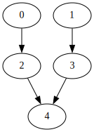
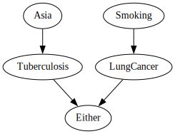
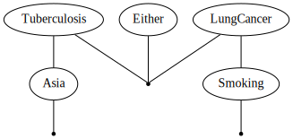
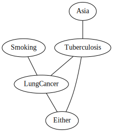
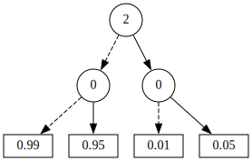
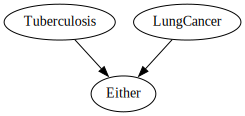
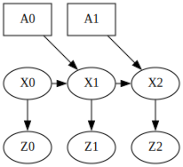
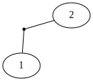

from gtsam import DiscreteBayesNet, DiscreteFactorGraphdisplay
Displaying objects in notebooks
Showing graphs
For showing graphs, Graphviz and its python wrapper need to be installed. I did that with conda install python-graphviz which also installs graphviz, but these are installed by default on Google’s colabs.
Some GTSAM objects have a dot method, but notebooks cannot render this. We use a trick, by the following small class, inherting from graphviz.Source :
show
show (obj, *args, **kwargs)
Display an object with a dot method as a graph.
Asia = (0, 2)
Smoking = (1, 2)
Tuberculosis = (2, 2)
LungCancer = (3, 2)
Either = (4, 2)
bayesNet = DiscreteBayesNet()
bayesNet.add(Asia, "99/1")
bayesNet.add(Smoking, "50/50")
bayesNet.add(Tuberculosis, [Asia], "99/1 95/5")
bayesNet.add(LungCancer, [Smoking], "99/1 90/10")
bayesNet.add(Either, [Tuberculosis, LungCancer], "F T T T")show(bayesNet)
We can, however, create our own formatter in python, and pass it as an optional argument:
domain = ["Asia", "Smoking", "Tuberculosis", "LungCancer", "Either"]
def keyFormatter(key): return domain[key]
show(bayesNet, keyFormatter)
It also works for factor graphs, as illustrated below:
# convert bayesNet to a factor graph and render:
fg = DiscreteFactorGraph(bayesNet)
show(fg, keyFormatter, binary_edges=True)
Factor graph graphviz rendering can be customized even more, through a DotWriter object. For example, the following displays the “primamry constraint graph”:
from gtsam import DotWriterwriter = DotWriter(figureWidthInches=5, figureHeightInches=5,
plotFactorPoints=False, binaryEdges=False)
show(fg, keyFormatter, writer)
Individual factors can also be shown, althoug arrows are not labeled (yet):
show(fg.at(2))
HTML
HTML can be rendered natively, like so:
bayesNetDiscreteBayesNet of size 5
P(0):
| 0 | value |
|---|---|
| 0 | 0.99 |
| 1 | 0.01 |
P(1):
| 1 | value |
|---|---|
| 0 | 0.5 |
| 1 | 0.5 |
P(2|0):
| 0 | 0 | 1 |
|---|---|---|
| 0 | 0.99 | 0.01 |
| 1 | 0.95 | 0.05 |
P(3|1):
| 1 | 0 | 1 |
|---|---|---|
| 0 | 0.99 | 0.01 |
| 1 | 0.9 | 0.1 |
P(4|2,3):
| 2 | 3 | 0 | 1 |
|---|---|---|---|
| 0 | 0 | 1 | 0 |
| 0 | 1 | 0 | 1 |
| 1 | 0 | 0 | 1 |
| 1 | 1 | 0 | 1 |
However, to provide optional arguments, we have to resort to a similar trick:
pretty
pretty (obj, *args)
Render an object as html with optional arguments.
pose = gtsam.Pose2(12.4, 42.5, math.radians(45))
pretty(pose)
(x=12.4, y=42.5, theta=45.0)
pretty(bayesNet, keyFormatter)DiscreteBayesNet of size 5
P(Asia):
| Asia | value |
|---|---|
| 0 | 0.99 |
| 1 | 0.01 |
P(Smoking):
| Smoking | value |
|---|---|
| 0 | 0.5 |
| 1 | 0.5 |
P(Tuberculosis|Asia):
| Asia | 0 | 1 |
|---|---|---|
| 0 | 0.99 | 0.01 |
| 1 | 0.95 | 0.05 |
P(LungCancer|Smoking):
| Smoking | 0 | 1 |
|---|---|---|
| 0 | 0.99 | 0.01 |
| 1 | 0.9 | 0.1 |
P(Either|Tuberculosis,LungCancer):
| Tuberculosis | LungCancer | 0 | 1 |
|---|---|---|---|
| 0 | 0 | 1 | 0 |
| 0 | 1 | 0 | 1 |
| 1 | 0 | 0 | 1 |
| 1 | 1 | 0 | 1 |
Factor graphs work as well:
graph = DiscreteFactorGraph()
graph.add([Asia, Smoking], "4 1 10 4")
pretty(graph, keyFormatter)DiscreteFactorGraph of size 1
factor 0:
| Asia | Smoking | value |
|---|---|---|
| 0 | 0 | 4 |
| 0 | 1 | 1 |
| 1 | 0 | 10 |
| 1 | 1 | 4 |
And Bayes trees:
fg = DiscreteFactorGraph(bayesNet)
bt = fg.eliminateMultifrontal()
pretty(bt, keyFormatter)DiscreteBayesTree of size 5
P(Asia,Tuberculosis):
| Asia | Tuberculosis | value |
|---|---|---|
| 0 | 0 | 0.9801 |
| 0 | 1 | 0.0099 |
| 1 | 0 | 0.0095 |
| 1 | 1 | 0.0005 |
P(LungCancer,Either|Tuberculosis):
| Tuberculosis | 00 | 01 | 10 | 11 |
|---|---|---|---|---|
| 0 | 0.945 | 0 | 0 | 0.055 |
| 1 | 0 | 0.945 | 0 | 0.055 |
P(Smoking|LungCancer):
| LungCancer | 0 | 1 |
|---|---|---|
| 0 | 0.52381 | 0.47619 |
| 1 | 0.0909091 | 0.909091 |
And with a different (worse) ordering:
ordering = gtsam.Ordering()
ordering.push_back(Either[0])
ordering.push_back(LungCancer[0])
ordering.push_back(Tuberculosis[0])
ordering.push_back(Smoking[0])
ordering.push_back(Asia[0])
bt2 = fg.eliminateMultifrontal(ordering)
pretty(bt2, keyFormatter)DiscreteBayesTree of size 5
P(Tuberculosis,Smoking,Asia):
| Tuberculosis | Smoking | Asia | value |
|---|---|---|---|
| 0 | 0 | 0 | 0.49005 |
| 0 | 0 | 1 | 0.00475 |
| 0 | 1 | 0 | 0.49005 |
| 0 | 1 | 1 | 0.00475 |
| 1 | 0 | 0 | 0.00495 |
| 1 | 0 | 1 | 0.00025 |
| 1 | 1 | 0 | 0.00495 |
| 1 | 1 | 1 | 0.00025 |
P(LungCancer|Smoking,Tuberculosis):
| Smoking | Tuberculosis | 0 | 1 |
|---|---|---|---|
| 0 | 0 | 0.99 | 0.01 |
| 0 | 1 | 0.99 | 0.01 |
| 1 | 0 | 0.9 | 0.1 |
| 1 | 1 | 0.9 | 0.1 |
P(Either|Tuberculosis,LungCancer):
| Tuberculosis | LungCancer | 0 | 1 |
|---|---|---|---|
| 0 | 0 | 1 | 0 |
| 0 | 1 | 0 | 1 |
| 1 | 0 | 0 | 1 |
| 1 | 1 | 0 | 1 |
Works now for VectorValues as well, typically without formatter as default KeyFormatter kicks in for symbols.
vv = gtsam.VectorValues()
X = gtsam.symbol_shorthand.X
vv.insert(X(1), gtsam.Point2(2, 3.1))
vv.insert(X(2), gtsam.Point2(4, 5.2))
vv.insert(X(5), gtsam.Point2(6, 7.3))
vv.insert(X(7), gtsam.Point2(8, 9.4))
vv| Variable | value |
|---|---|
| x1 | 2 3.1 |
| x2 | 4 5.2 |
| x5 | 6 7.3 |
| x7 | 8 9.4 |
Domains
We also provide support for the Variables data structure:
variables = Variables()
T = variables.discrete("Tuberculosis", ["-", "+"])
L = variables.discrete("LungCancer", ["No", "Yes"])
C = variables.discrete("Either", ["Nope", "One or both"])
fragment = DiscreteBayesNet()
fragment.add(T, "99/1")
fragment.add(L, "50/50")
fragment.add(C, [T, L], "F T T T")pretty(fragment, variables)DiscreteBayesNet of size 3
P(Tuberculosis):
| Tuberculosis | value |
|---|---|
| - | 0.99 |
| + | 0.01 |
P(LungCancer):
| LungCancer | value |
|---|---|
| No | 0.5 |
| Yes | 0.5 |
P(Either|Tuberculosis,LungCancer):
| Tuberculosis | LungCancer | Nope | One or both |
|---|---|---|---|
| - | No | 1 | 0 |
| - | Yes | 0 | 1 |
| + | No | 0 | 1 |
| + | Yes | 0 | 1 |
assignment = variables.assignment({C: "Nope"})
assert pretty(assignment)._repr_html_() == 'DiscreteValues{2: 0}'
pretty(assignment, variables)| Variable | value |
|---|---|
| Either | Nope |
And of course, showing a graph as well:
show(fragment, variables)
Formatting HMMS
HMMs, and in general dynamic Bayes nets, should really be shown left to right. We create a writer with appropriate variablePositions is the object given to show is a Bayes net with X/A/Z variables:
A = variables.discrete_series('A', range(2), ["U", "D"])
X = variables.discrete_series('X', range(3), ["room1", "room2"])
Z = variables.discrete_series('Z', range(3), ["light", "dark"])
hmm = DiscreteBayesNet()
hmm.add(X[0], "99/1")
for k in range(2):
hmm.add(X[k+1], [X[k], A[k]], "1/2 3/4 1/2 3/4")
for k in range(3):
hmm.add(Z[k], [X[k]], "1/2 3/4")
show(hmm, variables, hints={"A":2, "X":1, "Z":0}, boxes={A[0][0],A[1][0]})
fg = gtsam.DiscreteFactorGraph(hmm)
show(fg, variables, hints={"A":2, "X":1, "Z":0})
Displaying a NonlinearFactorGraph
fg = gtsam.NonlinearFactorGraph()
model = gtsam.noiseModel.Unit.Create(2)
fg.push_back(gtsam.BetweenFactorPoint2(1, 2, [1,1], model))
values = gtsam.Values()
values.insert(1, [1,1])
values.insert(2, [2,2])
show(fg, values)
Art
We also provide some facilities for displaying some random art:
randomImageURLs
randomImageURLs (ch:int, sec:int, style:str, nrImages:int, maxIndex:int=8)
*Get URLs to some random art images associated with a chapter.
Args: ch (int): chapter number (base 1) sec (int): section number style (str): “cubist” | “steampunk” | “expressive” nrImages (int): number of images maxIndex (int, optional): Indexes to sample from. Defaults to 8.
Returns: A list of URLs*
urls = randomImageURLs(1, 0, "steampunk", 2)
print(urls)['https://github.com/gtbook/robotics/blob/main/Art/steampunk/S10-Robot%20menagerie-07.jpg?raw=1', 'https://github.com/gtbook/robotics/blob/main/Art/steampunk/S10-Robot%20menagerie-04.jpg?raw=1']from IPython.display import ImageImage(url=urls[0])
randomImages
randomImages (ch:int, sec:int, style:str, nrImages:int, maxIndex:int=8)
*Create an HTML element with some random images.
Args: ch (int): chapter number (base 1) sec (int): section number style (str): “cubist” | “steampunk” | “expressive” nrImages (int): number of images maxIndex (int, optional): Indexes to sample from. Defaults to 8.
Returns: HTML: div with nrImages*
for ch in range(1, 8):
print(ROBOTS[ch-1])
display(randomImages(ch, 3, "steampunk", 1))Robot%20menagerie
Trash%20sorting%20robot%20with%20gripper
iRobot%20vacuuming%20robot
Warehouse%20robots
Two-wheeled%20Toy%20Robot
Autonomous%20Vehicle%20with%20LIDAR%20and%20cameras
Autonomous%20camera%20drone